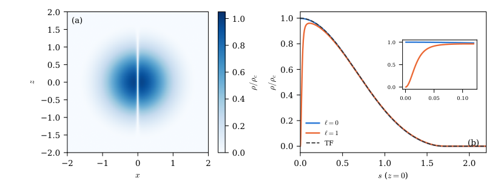

Algebraic and functional-analytic steps of the main theorem, Bogoliubov reductions, unit conversions and power counting were checked in Lean 4 with Mathlib.
Abstract
We study a spin-balanced unitary Fermi superfluid bound by an attractive $1/r$ interaction within an extended Thomas–Fermi density functional. Its large-particle-number limit is the Lane–Emden polytrope of index $3/2$. We prove the leading gradient correction to the ground-state energy and strong convergence of the density amplitude. A rescaled surface problem predicts the next energy correction and the leading integrated density error. Matching a vortex core to the polytropic bulk gives the energetic threshold of a singly quantized central vortex, including the constant beyond the leading logarithm. Linearizing the same surface problem predicts a local energetic threshold for collective surface excitations that, in the natural TF frequency units, decreases more slowly with particle number than the central-vortex threshold. Radial stationary, spherical Bogoliubov–Poisson, and axisymmetric real-time calculations test the predicted energy corrections and vortex matching, and resolve finite-size surface-mode minima whose approach to the continuum surface coefficient is followed to $N\simeq4\times10^6$. For the reference gradient coefficient the vortex constant is $c_1=-0.535$, and the surface Landau scale is $1.417\,ω_K(\hbar_{\rm eff}^2/2R_{\rm TF})^{1/6}\propto N^{-1/9}$; sector energies at $N\simeq4.6\times10^5$, computed after the fit, agree with the extrapolated vortex threshold to $10^{-4}$. These results distinguish the accuracy of the Thomas–Fermi bulk from the gradient physics that controls the surface and vortex core, and separate vortex energetics from the open problem of nonlinear vortex entry.
Problem
The work studies a spin-balanced unitary Fermi superfluid bound by an attractive 1/r interaction within an extended Thomas–Fermi density functional. Its large-N limit is the Lane–Emden polytrope of index 3/2. The aim is to determine the gradient corrections to the energy and density, the surface structure, and the energetic thresholds for vortices and surface excitations.
Approach
The leading gradient correction to the ground-state energy and strong convergence of the density are proved. A rescaled surface boundary-layer problem predicts the next energy correction and the integrated density error. A vortex core is matched to the polytropic bulk to obtain the central-vortex threshold, and linearizing the surface problem gives a surface Landau scale. Radial, spherical Bogoliubov–Poisson and axisymmetric real-time numerics test the predictions, and parts of the proofs and power counting were checked in Lean 4 with Mathlib.
Results
The vortex constant beyond the leading logarithm is c1 = -0.535, and the surface Landau scale scales as N^{-1/9}, more slowly than the vortex threshold. Numerics confirm the static coefficients to subpercent accuracy and the vortex threshold to about 1e-4 at N ≈ 4.6×10^5.

Figure 4: Central vortex at \hbar_{\mathrm{eff}}=0.0125 ( N=6.4\times 10^{4} ). (a) Density of the \ell=1 state in the meridional plane y=0 . (b) Equatorial profiles of the \ell=0 and \ell=1 states against TF as functions of the cylindrical radius s ; inset: the core, of width \sim\xi_{0}=0.014 . Lengths in units of r_{N} .